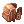
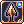
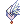
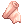
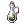
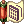
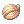
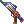

File list
This special page shows all uploaded files.
{kind=link}
{kind=link}
| Date | Name | Thumbnail | Size | User | Description | Versions |
|---|---|---|---|---|---|---|
| 09:35, 2 November 2015 | Msm3.gif (file) |  |
453 bytes | Cosmos | 1 | |
| 03:55, 27 March 2016 | 5198 evolved drooping bunny.png (file) | 454 bytes | Renata | 1 | ||
| 00:09, 22 November 2016 | Counter Slash.png (file) |  |
454 bytes | Ggboyz | Reverted to version as of 16:47, 6 October 2016 | 3 |
| 17:29, 30 September 2016 | Fortunity - Heroic Backpack.png (file) |  | 454 bytes | Akenoyuki | 1 | |
| 17:39, 23 October 2016 | White Imprison.png (file) |  |
454 bytes | Ggboyz | 1 | |
| 04:13, 3 October 2016 | Hallucinationwalk.png (file) | 455 bytes | Windrell | 1 | ||
| 02:19, 18 September 2015 | Orcv.png (file) | 455 bytes | AloeLeaflet | 1 | ||
| 13:25, 5 October 2016 | Striking.png (file) |  |
455 bytes | Seandh | 1 | |
| 15:17, 7 January 2016 | Charm-Fire.png (file) | 456 bytes | Pruu | for use in Pruu's Guide to Kagerou/Oboro for PVM | 1 | |
| 13:22, 5 October 2016 | Earth Insignia.png (file) |  |
456 bytes | Seandh | 1 | |
| 06:29, 9 May 2019 | SEparty.png (file) | 456 bytes | Colours | 1 | ||
| 01:02, 18 September 2015 | Witchstarsand.png (file) | 456 bytes | AloeLeaflet | 1 | ||
| 04:00, 28 February 2019 | 2578.png (file) | 457 bytes | Colours | 1 | ||
| 11:08, 16 October 2016 | Back Side Slide.png (file) | 457 bytes | RadenWA | 1 | ||
| 00:51, 18 September 2015 | Melangepot.png (file) | 457 bytes | AloeLeaflet | 1 | ||
| 00:02, 17 September 2015 | Redcondpot.png (file) | 457 bytes | AloeLeaflet | 1 | ||
| 00:53, 10 September 2015 | Blue Potion.png (file) | 458 bytes | AloeLeaflet | 1 | ||
| 13:21, 5 October 2016 | Earth Grave.png (file) |  | 458 bytes | Seandh | 1 | |
| 16:36, 30 September 2016 | Fortunity - White Wing Brooch.png (file) |  | 458 bytes | Akenoyuki | 1 | |
| 04:40, 18 February 2016 | RK PROV.png (file) | 458 bytes | Shalltear | 1 | ||
| 23:29, 21 July 2021 | 25864.png (file) | 459 bytes | Pachangui | 1 | ||
| 15:04, 5 October 2016 | Create Elemental Converter.png (file) | 459 bytes | LethalConcept | 1 | ||
| 07:55, 19 October 2016 | Death Bound.png (file) | 459 bytes | Ggboyz | 1 | ||
| 11:10, 16 October 2016 | Front Slide.png (file) |  |
460 bytes | RadenWA | 1 | |
| 04:13, 3 October 2016 | Phantommenace.png (file) | 460 bytes | Windrell | 1 | ||
| 08:34, 1 June 2017 | HD Carnium.png (file) | 461 bytes | Jack | 1 | ||
| 16:21, 28 February 2017 | Potion Research.png (file) |  |
462 bytes | AloeLeaflet | 1 | |
| 22:27, 29 September 2016 | Silvervine Root Twist.png (file) |  |
462 bytes | Eraquis | 1 | |
| 21:38, 25 October 2016 | Sm twohand.png (file) | 462 bytes | Tachi | 1 | ||
| 02:19, 18 September 2015 | Softsilk.png (file) |  | 462 bytes | AloeLeaflet | 1 | |
| 03:01, 24 October 2016 | Stasis.png (file) | 462 bytes | Ggboyz | 1 | ||
| 11:52, 22 January 2020 | Triangle Shot.png (file) | 463 bytes | JoaoAlkmim | 1 | ||
| 01:32, 18 September 2015 | Awakeningpotion.png (file) |  | 464 bytes | AloeLeaflet | 1 | |
| 03:03, 24 October 2016 | Chain Lightning.png (file) | 465 bytes | Ggboyz | 1 | ||
| 16:59, 27 October 2017 | Inv2 29830.png (file) |  |
465 bytes | Tokeiburu | 1 | |
| 01:14, 17 September 2015 | Snowflower.png (file) | 466 bytes | AloeLeaflet | 1 | ||
| 01:37, 10 September 2015 | Excaliburnes.png (file) | 467 bytes | AloeLeaflet | 1 | ||
| 14:36, 4 November 2015 | GoldCoin.png (file) | 467 bytes | Adri | 1 | ||
| 01:44, 10 September 2015 | Holy Sword.png (file) | 467 bytes | AloeLeaflet | Excalibur | 2 | |
| 13:40, 5 October 2016 | Energy Coat.png (file) | 468 bytes | Seandh | 1 | ||
| 15:19, 7 January 2016 | Flip Tatami.png (file) |  | 468 bytes | Pruu | for use in Pruu's Guide to Kagerou/Oboro for PVM | 1 |
| 23:36, 16 September 2015 | Stoneofsage.png (file) | 468 bytes | AloeLeaflet | 1 | ||
| 19:48, 11 January 2016 | 16017.png (file) | 469 bytes | Tokeiburu | 1 | ||
| 07:56, 19 October 2016 | Hundred Spears.png (file) | 469 bytes | Ggboyz | 1 | ||
| 00:22, 14 March 2017 | Mammonite.png (file) |  |
469 bytes | AloeLeaflet | 1 | |
| 01:02, 18 September 2015 | Seedoflife.png (file) |  | 469 bytes | AloeLeaflet | 1 | |
| 14:56, 5 October 2016 | Sight.png (file) | 469 bytes | LethalConcept | 1 | ||
| 17:48, 1 October 2016 | Southerncross.png (file) |  | 469 bytes | Appleproject | 1 | |
| 19:42, 25 July 2018 | Kingskeyinv.png (file) | 470 bytes | Panic | 1 | ||
| 06:01, 30 September 2016 | NPC Skill Icon.png (file) | 470 bytes | Cyphers | 1 |
{kind=link}
{kind=link}
{kind=link}
{kind=link}
{kind=link}
{kind=link}
{kind=link}
{kind=link}
{kind=link}
{kind=link}
{kind=link}
{kind=link}
{kind=link}
{kind=link}
{kind=link}
{kind=link}
{kind=link}
{kind=link}
{kind=link}
{kind=link}
{kind=link}
{kind=link}
{kind=link}
{kind=link}
{kind=link}
{kind=link}
{kind=link}
{kind=link}
{kind=link}